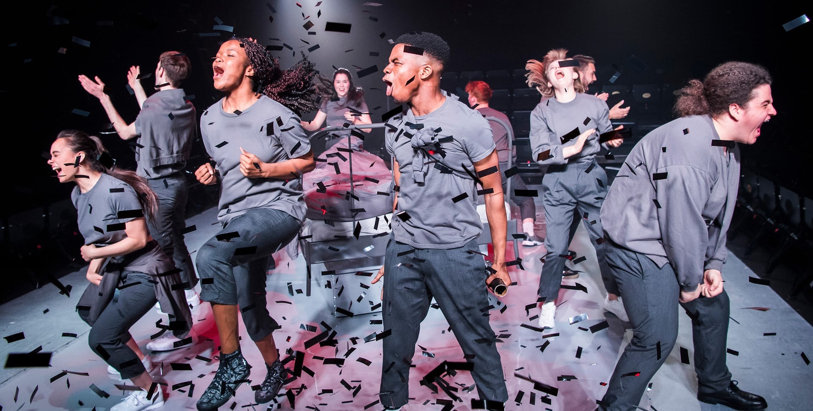
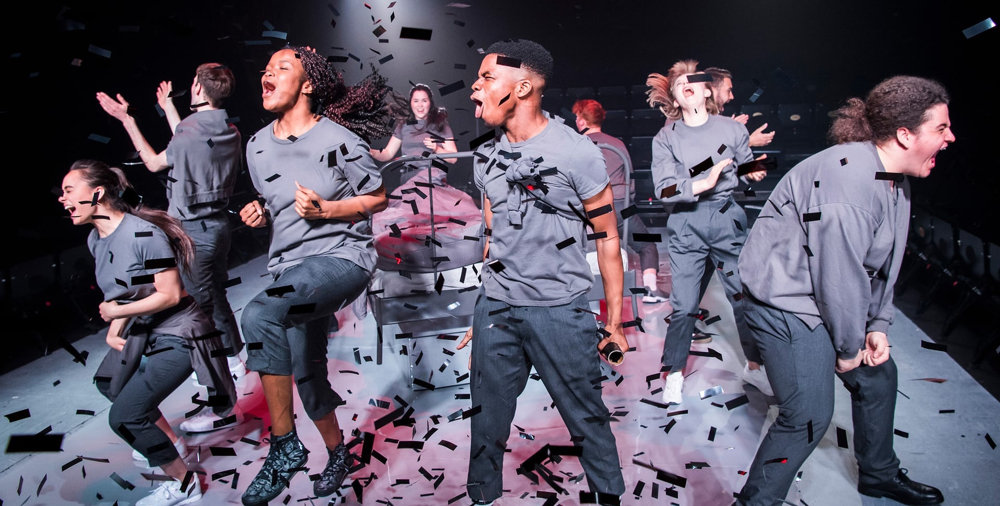

[x]
 



the fall
written by james fritz
first performed at finborough theatre (2016)
southwark playhouse (2018)
"youth theatre at its most mature,
and most dazzling" - the guardian
designer – chris hone
photographer – helen murray
lady windermere's fan
as associate director
directed by kathy burke
vaudeville theatre 2018
photographer - marc brenner
the flying lovers of vitebsk
as associate director
directed by emma rice
shakespeare’s globe, edinburgh international
festival, uk tour – 2017
winner of the carol tambor best of
edinburgh award 2017
photographer – steve tanner
play 26
written by miriam battye
vault festival 2017
“breathtakingly good” - there ought
to be clowns
a midsummer night's dream
adapted by kate kennedy after shakespeare
kneeigh and the national youth theatre
criterion theatre 2020
'fizzes with energy' the stage
photographer - helen murray
design - camilla clarke
lighting - zoe spurr
composition - naomi hammerton
mind the gap
hot tubs and trampolines theatre company
new diorama and national theatre temporary
space (2015)
winner of the '5 minute festival'
"dazzling and intricate" - everything
theatre
about matt
matt is an award winning theatre director
from north yorkshire, now based in london.
he trained at east 15 acting school
and was awarded the bryan forbes bursary
under the mentorship of
michael attenborough CBE.
matt was national theatre new works
department resident director 2018/19.
he is an associate of the national youth
theatre and regularly facilitates workshops
for organisations including the old vic,
almeida, open door and generation arts.
matt is represented by rachel chambers at jonathun arun (email here)
[x]